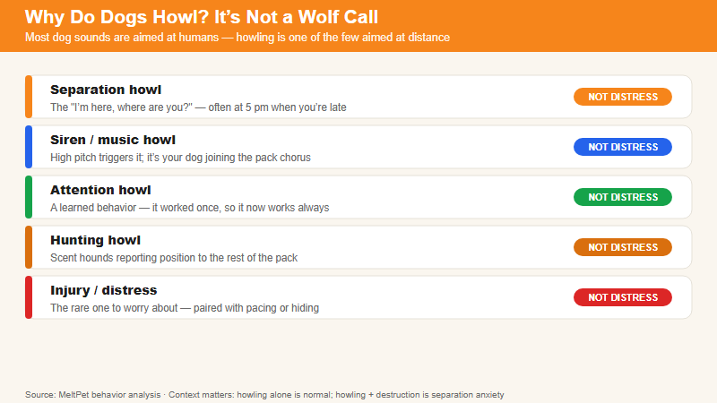

A howl isn't a broken bark. It's a different instrument entirely — and what it says depends on who's howling, when, and why. | 2026-07-31 · MeltPet · 6 min read
It sounds like a wolf. It means something much closer to home.
Last updated: 2026-07-31
Your Dog Makes a Sound You Didn't Know She Had
Most dog sounds are easy to decode. A bark at the door means someone's there. A whine by the food bowl means dinner's late. A growl means back off — no ambiguity needed. But a howl lands differently. It's not conversational. It's not directed at anything you can see. Your dog tips her head back, closes her eyes halfway, and produces a sound that seems to come from some older, wilder part of her brain — the part that predates couches and kibble and the concept of a vet appointment.
The internet has a tidy explanation ready: your dog thinks she's a wolf and she's answering the call of the wild. This isn't exactly wrong, but it's also not very useful. A howl triggered by a passing ambulance and a howl triggered by you walking out the front door are completely different events that happen to share the same sound. They come from different places, mean different things, and — if one of them is a problem — need different solutions.
So let's sort them out. Not with wolf mysticism, but with what we actually know from veterinary behavior, acoustic biology, and the accumulated experience of people who live with dogs that howl.
What a Howl Is, Mechanically
A bark is short-range. It's percussive, broadband, designed to cut through ambient noise at close distance — "someone's at the door," "throw the ball," "I see a squirrel." It carries maybe a few hundred feet. A howl is a completely different acoustic instrument. The fundamental frequency of a canid howl sits between roughly 150 and 1,200 Hz — a band that atmospheric conditions barely attenuate. In open terrain, wolf howls carry six to ten miles. Trees, wind, fog — the sound punches through all of it. This is not an accident of anatomy. It's a signal architecture built for one purpose: coordinating across distance when you can't see each other.
Wolves howl to reassemble after a hunt. To check in when the pack is spread across separated terrain. To warn a neighboring pack off a territory boundary. The message is always some variation of I'm here — are you? — where? The key thing to understand is that your dog inherited every piece of this acoustic hardware. She's never hunted caribou across ten miles of tundra. She's never had to coordinate pack movement through fog. But the circuit is intact. It fires when the right trigger hits it.
And the most reliable trigger, it turns out, is something that sounds like another dog doing the same thing.

Five kinds of howl — and only one of them is a reason to worry.
The Ambulance Is Not Hurting Her Ears
This is the scenario everyone knows: your dog is asleep on the couch, an ambulance passes three blocks away, and suddenly she's upright, nose aimed at the ceiling, singing along like she's been rehearsing for this moment her whole life. The popular explanation says the pitch hurts her ears. If that were true, she'd leave the room. Dogs don't run toward pain and harmonize with it. She stays. She joins.
What's actually happening is simpler and weirder. A siren's rising-then-falling pitch sweep — the "wooo-OOO-wooo" — maps almost perfectly onto the frequency modulation pattern that dogs and wolves use in long-distance howls. It's not a perfect match, but it's close enough that your dog's auditory system flags it as another dog howling. And if another dog is howling — any dog, anywhere, real or acoustic phantom — the ancestral rule is unambiguous: you answer. You don't stop to evaluate. You don't check whether there's a pack emergency. You hear the call and you respond. The behavior is reflexive, not considered.
This same mechanism explains why some dogs howl at musical instruments. Violin glissandos. Sustained harmonica notes. A trumpet line in a salsa track. A human singing a long note in the right register. If the pitch sustains and slides, the dog's brain reads it as a howl, and a howl demands a reply. A 2014 study confirmed this cleanly: slow pitch variation reliably triggered vocalization, while staccato notes and percussion did not. Your dog doesn't have opinions about John Coltrane. Coltrane just happened to play in a frequency band her brain is hardwired to answer.
If your dog only howls at sirens and ignores everything else, that's normal. If she howls at sirens, harmonicas, piano recitals, and you singing in the shower, that's also normal. Individual sensitivity varies widely. The point is that none of this is distress. She's not suffering. She's reflexively answering what her brain tells her is another dog. You can close the window and laugh about it. It's the canine equivalent of reflexively shouting "what?" when someone says your name across a crowded room.
When Nobody's There to Hear It
The howl that worries people isn't the siren duet. It's the one that happens when the house is empty.
Dogs are social animals whose brains were built for constant proximity. For most of their evolutionary history, being alone wasn't a minor inconvenience — it was a survival emergency. A solitary canid was vulnerable to predation, cut off from food sources, excluded from pack coordination. Your dog doesn't know you're coming back in 20 minutes versus 20 hours. When you walk out the door, silence descends on the house, and for a dog whose entire cognitive architecture assumes the pack is always nearby, silence from the pack is alarming.
The distinction that matters is between mild loneliness and clinical separation anxiety, because they look similar from outside the door but have completely different implications.
A lonely dog howls for a few minutes after you leave and then settles. She might be disappointed, but she's not panicked. Her body is relaxed between vocalizations. She'll eventually nap, chew something appropriate, or watch out the window. There's no destruction, no indoor elimination, no self-injury. This kind of howling responds well to cheap, practical interventions: a frozen Kong, a window with a view, background noise at a reasonable volume. (One study found reggae and soft rock reduced stress vocalizations in kenneled dogs more effectively than classical music. The researchers clearly enjoyed designing that methodology.)
A dog with separation anxiety is in a different state entirely. The howling doesn't stop after a few minutes — it continues, often for hours. It's accompanied by pacing, panting, drooling, destruction focused on exit points (doors, windows, crates), and sometimes indoor elimination in a dog who's been reliably house-trained for years. These dogs aren't being dramatic. Their cortisol levels — measured via saliva samples in controlled studies — are genuinely elevated. The howling is a symptom of panic, not a behavior to be trained away with a bark collar. If this describes your dog, you need a veterinary behaviorist and a systematic desensitization protocol, not a YouTube tutorial. This is one of maybe three canine behavior problems where professional intervention is the difference between resolution and years of suffering for both dog and owner.
The fastest way to tell which one you're dealing with: set up a phone or laptop camera and record the first 20 minutes after you leave. A lonely dog vocalizes and then transitions to something else. An anxious dog escalates. Same sound from outside the door. Completely different situation inside it.
Your Breed Is the Loudest Variable
Some dogs were deliberately bred to howl. Others were deliberately bred to shut up. If you skip this part of the equation, you'll spend years trying to train a behavior that was selected for across hundreds of generations.
Northern breeds — Siberian Huskies, Alaskan Malamutes, Samoyeds — sit at the extreme end of the howling spectrum. Sled dogs work in teams spread across hundreds of yards. Wind is constant. Barking — short-range, percussive — is useless in those conditions. You need a sound that travels, and you need to recognize individual voices within a chorus. These dogs were bred for loud, sustained, individually distinctive howling, and a modern Husky didn't read the manual. She just has a brain that treats howling as the default communication channel. Ask a Husky owner whether their dog howls and they'll look at you like you asked whether fish swim. The question isn't if. It's what set her off this time.
Hounds are the second tier, and their howling — usually called baying — is a specialization of the same acoustic hardware. Beagles, Bloodhounds, Coonhounds, Basset Hounds: these dogs were bred to work through dense cover where hunters couldn't see them. The baying was the hunter's GPS. A Coonhound who trees a raccoon and bays for 45 minutes straight isn't being stubborn. He's doing the job seven hundred generations of selective breeding built him for. If you live in an apartment with shared walls, a hound is a genuinely difficult roommate. This isn't a training failure. It's breed architecture.
Retrievers and herding breeds sit at the quiet end. Labradors and Golden Retrievers were bred to sit silently beside hunters in a blind — a bark or howl at the wrong moment spooks the ducks. German Shepherds and Border Collies work livestock with eye contact, body posture, and short directional barks. A sustained howl would scatter the sheep into the next county. These dogs can howl, and individuals vary, but the breed threshold is higher. A Lab who howls occasionally at sirens is unremarkable. A Lab who howls for hours every day is worth a vet visit.
And then there's the wildcard: individual personality. Two littermates from the same quiet breed, raised in the same house, can have completely different vocal profiles. One sings at every siren. The other looks vaguely embarrassed and goes back to sleep. Genetics loads the gun. Temperament and environment decide whether it fires.
The Howl That Wasn't There Last Month
Most howling is healthy and boringly explained by the framework above: acoustic trigger meets breed tendency meets individual personality. But when a dog who has never howled suddenly starts, or a dog who howled occasionally suddenly does it constantly, the framework shifts. New vocalizations in adult dogs can signal things that have nothing to do with behavior.
Pain is the first rule-out. Dogs in discomfort — arthritis, dental abscesses, ear infections, abdominal pain — sometimes vocalize in patterns their owners have never heard before. The howl isn't a response to anything external. It's a response to internal sensory input the dog can't localize or escape. If your eight-year-old Lab who has been nearly silent her entire life suddenly starts howling daily, the first stop is the vet, not the trainer. A physical exam, bloodwork, and possibly imaging will surface problems that behavior modification can't touch.
Senior dogs need a specific lens. Canine cognitive dysfunction — the dog version of dementia — frequently includes vocalization changes. A thirteen-year-old dog who howls at night, especially if she also stares at walls, paces aimlessly, gets stuck behind furniture, or seems confused in familiar rooms, may be tracking cognitive decline rather than hearing a trigger you can't detect. Night lights reduce disorientation. Senilife and Neutricks have modest evidence for slowing progression. Maintaining rigid daily routines helps more than most owners expect. But step one is a diagnosis from your vet, not a guess from the internet.
Hearing loss produces a counterintuitive pattern: deaf or partially deaf dogs sometimes howl more, not less. The leading theory is that they can't hear their own output at normal volume, so they ramp it up. If your senior dog starts howling at odd hours with no obvious trigger — and particularly if she's stopped responding to her name or the sound of the treat bag — ask your vet to check her hearing. The fix isn't silence training. It's understanding that your dog has lost her volume control and adjusting your expectations accordingly.
How to Live With a Dog Who Howls
The management strategy depends entirely on what's driving the howl, but there are some principles that apply across the board.
For siren howlers: manage the environment, not the dog. Close windows. Use a white noise machine or a box fan in the room your dog spends the most time in. During predictable noise events — if you live near a fire station or on a busy ambulance route — move your dog to an interior room before the noise starts. This isn't "giving in." It's acknowledging that you can't train out a reflexive acoustic response any more than you can train yourself not to flinch at a loud noise.
For loneliness howlers: address the loneliness, not the vocalization. A frozen food puzzle timed to your departure. A midday dog walker. A second dog, if your household can support one — but only if the howling is loneliness and not separation anxiety, because adding a second dog to a separation anxiety case often gives you two anxious dogs instead of one. The principle is straightforward: a dog who has something engaging to do is less likely to howl at the silence. Durable chew toys and puzzle feeders are cheaper than a behaviorist and effective for most mild cases.
For attention-seeking howlers: stop reinforcing it. If your dog howls and you respond — by yelling, by making eye contact, by saying "quiet," by walking over to her — you've just taught her that howling works. Any response is a reward. Wait for silence, even three seconds of it, then reward calmly with a treat and brief praise. The howling will get worse before it gets better — this is called an extinction burst, and it's the hardest part — but if you give in during the burst, you've taught your dog that the new required duration is whatever she just did. Consistency is the whole game here. One slip during extinction resets the clock.
For medical howlers: see a vet, not a trainer. No amount of behavior modification fixes arthritis pain or cognitive decline. Treat the underlying condition and the vocalization usually quiets on its own.
The Howl Isn't the Problem
A dog's howl is a window into cognition that predates every breed, every kennel club, every bag of kibble. It's not a behavior problem to eliminate. It's a communication channel to understand. Once you know whether the trigger is acoustic confusion, loneliness, breed instinct, or something medical, the path forward stops being mysterious. Sirens? Close the window and enjoy the accidental duet. Loneliness? Address the root cause and the howling usually quiets on its own. Breed instinct? You bought a Husky. This was part of the contract. Medical? Your vet can help. A trainer can't.
For most dogs, most of the time, a howl is just a howl. It's not an emergency. It's not a cry for help. It's a dog, running ancient software, answering a call only she can hear. You don't need to fix it. You just need to know what it means.
📚 Sources
Peer-reviewed research on canine vocalization, wolf howl acoustics, and separation-related behavior.
Harrington, F.H., & Mech, L.D. (1978).Wolf howling and its role in territory maintenance. Behaviour, 68(3–4), 207–249.
Pongrácz, P., Molnár, C., & Miklósi, Á. (2010).Barking in family dogs: an ethological approach. The Veterinary Journal, 183(2), 141–147.
Kogan, L.R., Schoenfeld-Tacher, R., & Simon, A.A. (2012).Behavioral effects of auditory stimulation on kenneled dogs. Journal of Veterinary Behavior, 7(5), 268–275.
Sherman, B.L., & Mills, D.S. (2008).Canine anxieties and phobias: an update on separation anxiety and noise aversions. Veterinary Clinics of North America: Small Animal Practice, 38(5), 1081–1106.
Storengen, L.M., Boge, S.C.K., & Lingaas, F. (2014).A descriptive study of 215 dogs diagnosed with separation anxiety in Norway. Journal of Veterinary Behavior, 9(5), 223–230.